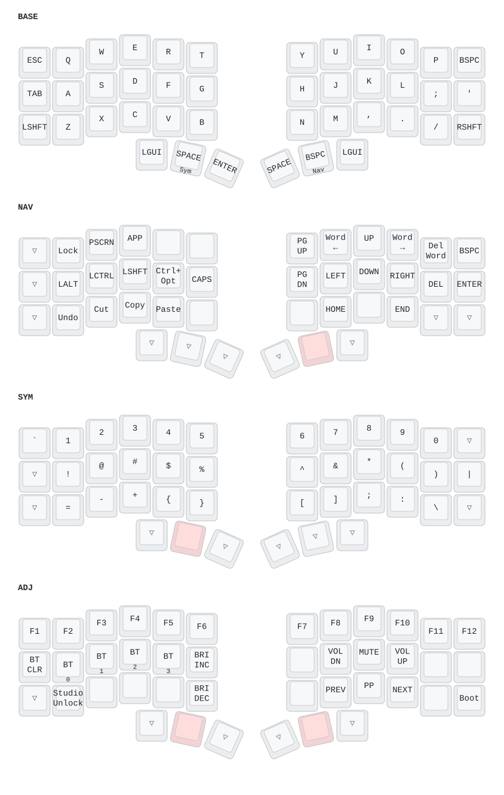

Generated from CHEATSHEET.md and config/toucan.keymap at 8b18f18 on 2026-09-20
| Thumb | Before | Now |
|---|---|---|
| left outer | Ctrl | Cmd |
| left middle | Opt | SYM (hold) / Space (tap) |
| left inner | NAV (hold) / Enter (tap) | Enter |
| right inner | Space | Space |
| right middle | SYM (hold) / Bspc (tap) | NAV (hold) / Bspc (tap) |
| right outer | Cmd | Cmd |
Ctrl and Opt are now home-row combos, and the two layer thumbs swapped hands: SYM sits under the left thumb, NAV under the right.
On caps legended from print/keycap-legends.pdf, each layer thumb shows the glyph it sends when tapped, with the layer it holds printed underneath.
Press the two (or three) keys together, on the BASE layer.
| Combo | Sends |
|---|---|
S+D |
Ctrl |
D+F |
Opt |
S+D+F |
Ctrl+Opt |
J+K |
Opt |
K+L |
Ctrl |
J+K+L |
Ctrl+Opt |
They are sticky keys, so one binding covers both habits:
S+D, release, D → Ctrl+D.They only fire on BASE, and need 150 ms of no typing beforehand, so words like "sad" and "desk" type normally.
On the legended caps a combo is drawn as ⌃ or ⌥ on the edge facing the key you press it with, and the bar running under S·D·F (and J·K·L) is the three-key Ctrl+Opt.
NAV below means: hold the right middle thumb. Tapping it instead sends Backspace.
NAV now lives on the right thumb while most of its keys (arrows, word jumps) are on the right hand, so these are same-hand rolls. If that turns out to be awkward, swapping NAV back to a left thumb is a one-line keymap change.
| Task | Keys | Sends |
|---|---|---|
| Word jump ← / → | NAV + U / O |
Opt+← / Opt+→ |
| Delete word | NAV + P |
Opt+Backspace |
| Subword jump ← / → | NAV + hold F + J / L |
Ctrl+Opt+← / → |
| Arrows | NAV + J K I L |
← ↓ ↑ → |
| Line start / end | NAV + M / . |
Home / End |
| Page up / down | NAV + Y / H |
PgUp / PgDn |
| Undo / cut / copy / paste | NAV + Z / X / C / V |
Cmd+Z / X / C / V |
| Lock screen | NAV + Q |
Ctrl+Cmd+Q |
| Delete forward | NAV + ; |
Del |
| Caps lock | NAV + G |
Caps |
| Screenshot | NAV + W |
PrintScreen |
Ctrl+D-style chords use the combos instead: tap S+D, release, tap the letter.
Two routes, both Ctrl+Opt+arrow:
F + arrow — F is Ctrl+Opt on the NAV layer, J/K/I/L are the arrows. Use this one. It does not depend on a one-shot surviving a layer change.S+D+F (or J+K+L), release, then NAV + arrow — relies on the sticky modifier staying alive across the NAV hold, which is untested on hardware. If it drops the modifier, use route 1.Trackpad swipes (macOS mode, the default) are independent of layers:
| Swipe | Sends |
|---|---|
| Up | Ctrl+Cmd+↑ |
| Right | Ctrl+Cmd+→ |
| Down | Ctrl+Cmd+↓ |
| Left | Ctrl+Cmd+← |
Pinch zoom sends Cmd+- / Cmd+=. Holding NAV or SYM turns trackpad movement into scrolling.
The characters moved, so here is where each class now lives:
SHIFT outer column, both hands).Q…P = 1…0.! @ # $ % — SYM + left home row A S D F G.^ & * ( ) — SYM + right home row H J K L ;.= - + { } — SYM + left bottom row Z X C V B.[ ] ; : \ — SYM + right bottom row N M , . /.| — SYM + ' (right pinky). ` — SYM + ESC.Holding SYM through the whole symbol run is usually faster than tapping in and out of it.
| Layer | How |
|---|---|
| NAV | hold right middle thumb (tap = Backspace) |
| SYM | hold left middle thumb (tap = Space) |
| ADJ | hold both NAV and SYM together |
| MOUSE | rest a finger on the trackpad (held while touching) |
